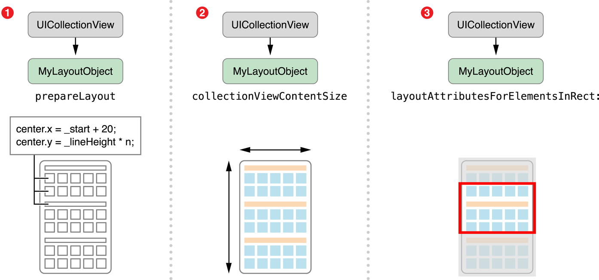
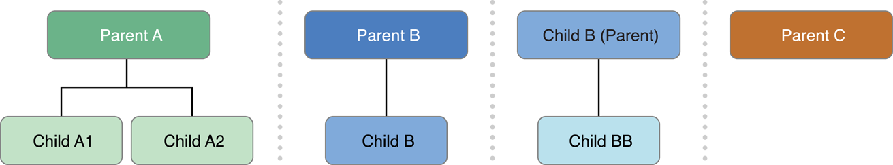
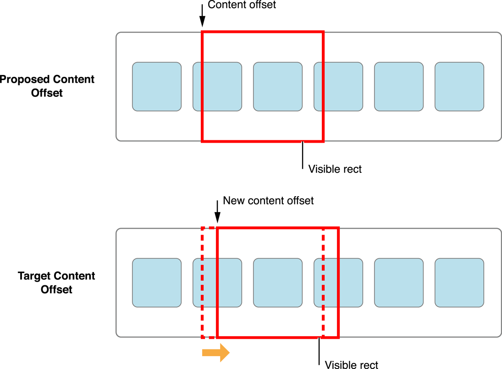

1. 加入手势支持
为什么要加入手势
场景
怎么通过手势改变布局信息
手势识别器提供了一种动态修改布局参数的简便方法。例如，您可以使用捏合手势识别器来更改自定义布局中项目之间的间距。用于配置这种手势识别器的过程相对简单。
- 创建手势识别器。
- 将手势识别器附加到集合视图。
- 使用手势识别器的处理程序方法更新布局参数并使布局对象无效。
动态修改 itemSize
-(void)viewDidLoad {
[super viewDidLoad];
UIPinchGestureRecognizer * pinch = [[UIPinchGestureRecognizer alloc]initWithTarget:self action:@selector(handlePinchGesture:)];
[self.collectionView addGestureRecognizer:pinch];
}
-(void)handlePinchGesture:(UIPinchGestureRecognizer*)sender{
if ([sender numberOfTouches] != 2)
return;
// Update the custom layout parameter and invalidate.
CGSize initSize = self.flowLayout.itemSize;
CGFloat maxWidth = 200;
CGFloat maxHeight = 200;
CGFloat minWidth = 20;
CGFloat minHeight = 20;
CGFloat width;
CGFloat height;
if (initSize.width*sender.scale>maxWidth) {
width = maxWidth;
}else if(initSize.width*sender.scale<minWidth){
width = minWidth;
}else{
width =initSize.width*sender.scale;
}
if (initSize.height*sender.scale>maxHeight) {
height = maxHeight;
}else if(initSize.height*sender.scale<minHeight){
height = minHeight;
}else{
height = initSize.height*sender.scale;
}
self.flowLayout.itemSize = CGSizeMake(width, height);
}
注意:如果实现了长按显示 menu 的代理方法，那么长按 cell 的手势就会失灵，如果想要长按 cell 手势生效的话就不要实现-collectionView: shouldShowMenuForItemAtIndexPath:这个方法，或者让其返回NO。
2. 创建自定义布局UICollectionViewLayout
2.1 什么场景会使用自定义布局
对于自定义布局，您需要子类UICollectionViewLayout，这为您的设计提供了一个全新的起点。只有少数方法为您的布局对象提供核心行为，并且在您的实现中是必需的。其余的方法可供您根据需要覆盖以调整布局行为。核心方法处理以下关键任务：
- 指定可滚动内容区域的大小。
- 为构成布局的单元格和视图提供属性对象，以便集合视图可以定位每个单元格和视图。
虽然您可以创建仅实现核心方法的功能布局对象，但如果您实现了几个可选方法，则布局可能会更具吸引力。
2.2 了解核心布局过程
集合视图直接与您的自定义布局对象一起使用，以管理整个布局过程。当集合视图确定它需要布局信息时，它会要求您的布局对象提供它。例如，集合视图在首次显示或调整大小时会询问布局信息。您还可以通过调用invalidateLayout布局对象的方法告诉集合视图显式更新其布局。该方法抛弃现有布局信息并强制布局对象生成新的布局信息。
注意：不要将布局对象的invalidateLayout方法与集合视图的reloadData方法混淆。调用该invalidateLayout方法不一定会导致集合视图丢弃其现有的单元格和子视图。相反，它会强制布局对象在移动和添加或删除项目时根据需要重新计算其所有布局属性。如果数据源中的数据已更改，则该reloadData方法合适。无论您如何启动布局更新，实际布局过程都是相同的。
另外invalidateLayout不会立马更新，而是会标记需要更新，在下一个视图更新周期开始更新。
在布局过程中始终按以下顺序调用这些方法：
- 使用该prepareLayout方法执行提供布局信息所需的前期计算。
- 使用此collectionViewContentSize方法可根据初始计算返回整个内容区域的整体大小。
使用此layoutAttributesForElementsInRect:方法返回指定矩形中的单元格和视图的属性。

2.3 准备布局 prepareLayout
该prepareLayout方法用于为集合视图中的每个视图实例化所有布局属性对象，然后将这些属性缓存在我们的layoutInformation字典中供以后使用。
2.3.1 创建布局属性&&存储布局属性
布局负责的属性对象是UICollectionViewLayoutAttributes类的实例。可以在应用程序中以各种不同的方法创建这些实例。
在创建UICollectionViewLayoutAttributes类的新实例时，使用以下类方法之一：
- layoutAttributesForCellWithIndexPath:
- layoutAttributesForSupplementaryViewOfKind:withIndexPath:
- layoutAttributesForDecorationViewOfKind:withIndexPath:
创建每个属性对象后，为相应的视图设置相关属性。至少，在布局中设置视图的大小和位置。如果布局的视图重叠，请为zIndex属性指定值以确保重叠视图的一致排序。其他属性可让您控制单元格或视图的可见性或外观，并可根据需要进行更改。如果标准属性类不适合您的应用程序需求，则可以对其进行子类化和扩展，以存储有关每个视图的其他信息。子类化布局属性时，需要实现isEqual:比较自定义属性的方法，因为集合视图对其某些操作使用此方法。

在自定义的UICollectionViewLayout子类中实现 prepareLayout 方法
- (void)prepareLayout {
//初始化存储布局属性的字典
NSMutableDictionary *layoutInformation = [NSMutableDictionary dictionary];
NSMutableDictionary *cellInformation = [NSMutableDictionary dictionary];
NSIndexPath *indexPath;
NSInteger numSections = [self.collectionView numberOfSections;]
for(NSInteger section = 0; section < numSections; section++){
NSInteger numItems = [self.collectionView numberOfItemsInSection:section];
for(NSInteger item = 0; item < numItems; item++){
indexPath = [NSIndexPath indexPathForItem:item inSection:section];
MyCustomAttributes *attributes =
[self attributesWithChildrenAtIndexPath:indexPath];
[cellInformation setObject:attributes forKey:indexPath];
}
}
//end of first section
//continuation of prepareLayout implementation
for(NSInteger section = numSections - 1; section >= 0; section—-){
NSInteger numItems = [self.collectionView numberOfItemsInSection:section];
NSInteger totalHeight = 0;
for(NSInteger item = 0; item < numItems; item++){
indexPath = [NSIndexPath indexPathForItem:item inSection:section];
MyCustomAttributes *attributes = [cellInfo objectForKey:indexPath]; // 1
attributes.frame = [self frameForCellAtIndexPath:indexPath
withHeight:totalHeight];
[self adjustFramesOfChildrenAndConnectorsForClassAtIndexPath:indexPath]; // 2
cellInfo[indexPath] = attributes;
totalHeight += [self.customDataSource
numRowsForClassAndChildrenAtIndexPath:indexPath]; // 3
}
if(section == 0){
self.maxNumRows = totalHeight; // 4
}
}
[layoutInformation setObject:cellInformation forKey:@"MyCellKind"]; // 5
self.layoutInformation = layoutInformation
}
代码中序号部分的解释
- 在设置单元框架之前，从本地字典中检索在第一次传递数据时创建的布局属性。
- 自定义adjustFramesOfChildrenAndConnectorsForClassAtIndexPath:方法递归调整所有单元格的子孙的帧等，以匹配单元格的帧。
- 将调整后的属性放回字典后，totalHeight调整变量以反映下一个项目的框架需要的位置。这是代码利用自定义协议的地方。无论什么对象实现该协议需要实现该numRowsForClassAndChildrenAtIndexPath:方法，该方法返回每个类需要占用多少行，因为它具有多少个子节点。
- maxNumRows属性（以后需要来设置内容的大小）被设置为第0部分的总高度。具有最长高度的列始终为0部分，其高度已针对树中的所有子项进行调整，因为此实现不包括智能空间调整。
- 该方法通过将具有所有单元属性的layoutInformation字典插入到本地字典中并以唯一字符串标识符作为其键来结束。
用于在最后一步中插入字典的字符串标识符用于整个自定义布局的其余部分，以检索单元格的正确属性。当补充观点在示例中进一步发挥作用时变得更加重要。
//预布局方法 所有的布局应该写在这里面
- (void)prepareLayout
//此方法应该返回当前屏幕正在显示的视图（cell 头尾视图）的布局属性集合（UICollectionViewLayoutAttributes 对象集合）
- (NSArray *)layoutAttributesForElementsInRect:(CGRect)rect
//根据indexPath去对应的UICollectionViewLayoutAttributes 这个是取值的，要重写，在移动删除的时候系统会调用改方法重新去UICollectionViewLayoutAttributes然后布局
- (UICollectionViewLayoutAttributes *)layoutAttributesForItemAtIndexPath:(NSIndexPath *)indexPath
- (UICollectionViewLayoutAttributes *)layoutAttributesForSupplementaryViewOfKind:(NSString *)elementKind atIndexPath:(NSIndexPath *)indexPath
- //返回当前的ContentSize
- (CGSize)collectionViewContentSize
//是否重新布局
-(BOOL)shouldInvalidateLayoutForBoundsChange:(CGRect)newBounds
//这4个方法用来处理插入、删除和移动cell时的一些动画 瀑布流代码详解
- (void)prepareForCollectionViewUpdates:(NSArray *)updateItems
- (UICollectionViewLayoutAttributes*)initialLayoutAttributesForAppearingItemAtIndexPath:(NSIndexPath *)itemIndexPath
- (nullable UICollectionViewLayoutAttributes *)finalLayoutAttributesForDisappearingItemAtIndexPath:(NSIndexPath *)itemIndexPath
- (void)finalizeCollectionViewUpdates
//9.0之后处理移动相关
- (UICollectionViewLayoutInvalidationContext *)invalidationContextForInteractivelyMovingItems:(NSArray<NSIndexPath *> *)targetIndexPaths withTargetPosition:(CGPoint)targetPosition previousIndexPaths:(NSArray<NSIndexPath *> *)previousIndexPaths previousPosition:(CGPoint)previousPosition NS_AVAILABLE_IOS(9_0)
- (UICollectionViewLayoutInvalidationContext *)invalidationContextForEndingInteractiveMovementOfItemsToFinalIndexPaths:(NSArray<NSIndexPath *> *)indexPaths previousIndexPaths:(NSArray<NSIndexPath *> *)previousIndexPaths movementCancelled:(BOOL)movementCancelled NS_AVAILABLE_IOS(9_0)
2.3.2 添加补充视图
向布局添加补充视图的步骤如下：
- 使用registerClass:forSupplementaryViewOfKind:withReuseIdentifier:或registerNib:forSupplementaryViewOfKind:withReuseIdentifier:方法将补充视图注册到集合视图的布局对象。
- 在您的数据源中，实现collectionView:viewForSupplementaryElementOfKind:atIndexPath:。因为这些视图是可重用的，可以先dequeueReusableSupplementaryViewOfKind:withReuseIdentifier:forIndexPath:去获取
- 在 prepareLayout 中为您的补充视图创建布局属性对象，就像对单元格一样。
- 在layoutAttributesForElementsInRect:方法报道查看的属性数组中所有游戏这些布局属性对象。
实现layoutAttributesForSupplementaryViewOfKind:atIndexPath:方法以在查询时报道查看指定补充视图的属性对象。
For example
- (void)viewDidLoad {
[super viewDidLoad];
[self.collectionView registerNib:[UINib nibWithNibName:@"headerView" bundle:nil] forSupplementaryViewOfKind:AC_UICollectionElementKindSectionHeader withReuseIdentifier:@"header"];
}
-(UICollectionReusableView *)collectionView:(UICollectionView *)collectionView viewForSupplementaryElementOfKind:(NSString *)kind atIndexPath:(NSIndexPath *)indexPath{
UICollectionReusableView*header ;
if (kind == AC_UICollectionElementKindSectionHeader)
{
header = [collectionView dequeueReusableSupplementaryViewOfKind:kind withReuseIdentifier:@"header" forIndexPath:indexPath];
return header;
}
return header;
}
在自定义的UICollectionViewLayout 实现以下方法
//返回补充视图的布局属性
- (UICollectionViewLayoutAttributes *)layoutAttributesForSupplementaryViewOfKind:(NSString *)elementKind atIndexPath:(NSIndexPath *)indexPath
{
UICollectionViewLayoutAttributes *attribute = nil;
if ([elementKind isEqualToString:AC_UICollectionElementKindSectionHeader]) {
attribute = self.headLayoutInfo[indexPath];
}else if ([elementKind isEqualToString:AC_UICollectionElementKindSectionFooter]){
attribute = self.footLayoutInfo[indexPath];
}
return attribute;
}
注意
另外需要注意的是注册xib headerview的时候要选择指定的UICollectionReusableView 然后在上面添加其他控件。

2.3.3 使插入和删除动画更有趣
要想触发自定义 uicollectionviewlayout 的这个方面，必须使用 [self.collectionView insertItemsAtIndexPaths:@[[NSIndexPath indexPathForRow:self.dataSource.count-1 inSection:0]]];这类语句，而不能只是简单的 reloadData。
- (void)prepareForCollectionViewUpdates:(NSArray *)updateItems
{
[super prepareForCollectionViewUpdates:updateItems];
NSMutableArray *indexPaths = [NSMutableArray array];
for (UICollectionViewUpdateItem *updateItem in updateItems) {
switch (updateItem.updateAction) {
case UICollectionUpdateActionInsert:
[indexPaths addObject:updateItem.indexPathAfterUpdate];
break;
case UICollectionUpdateActionDelete:
[indexPaths addObject:updateItem.indexPathBeforeUpdate];
break;
case UICollectionUpdateActionMove:
//[indexPaths addObject:updateItem.indexPathBeforeUpdate];
//[indexPaths addObject:updateItem.indexPathAfterUpdate];
break;
default:
NSLog(@"unhandled case: %@", updateItem);
break;
}
}
self.shouldanimationArr = indexPaths;
}
还要指定插入单元格的初始属性和最终属性,代码中不是对每个单元格都进行了动画渲染，只是对特定数组中的单元格渲染，上面的代码是筛选匹配。
- (UICollectionViewLayoutAttributes*)initialLayoutAttributesForAppearingItemAtIndexPath:(NSIndexPath *)itemIndexPath
{
if ([self.shouldanimationArr containsObject:itemIndexPath]) {
UICollectionViewLayoutAttributes *attr = self.cellLayoutInfo[itemIndexPath];
attr.transform = CGAffineTransformRotate(CGAffineTransformMakeScale(0.2, 0.2), M_PI);
attr.center = CGPointMake(CGRectGetMidX(self.collectionView.bounds), CGRectGetMaxY(self.collectionView.bounds));
attr.alpha = 1;
[self.shouldanimationArr removeObject:itemIndexPath];
return attr;
}
return nil;
}
//对应UICollectionViewUpdateItem 的indexPathAfterUpdate 设置调用
- (nullable UICollectionViewLayoutAttributes *)finalLayoutAttributesForDisappearingItemAtIndexPath:(NSIndexPath *)itemIndexPath
{
if ([self.shouldanimationArr containsObject:itemIndexPath]) {
UICollectionViewLayoutAttributes *attr = self.cellLayoutInfo[itemIndexPath];
attr.transform = CGAffineTransformRotate(CGAffineTransformMakeScale(2, 2), 0);
attr.center = CGPointMake(CGRectGetMidX(self.collectionView.bounds), CGRectGetMaxY(self.collectionView.bounds));
attr.alpha = 0;
[self.shouldanimationArr removeObject:itemIndexPath];
return attr;
}
return nil;
}
2.3.4 改善布局的滚动体验
自定义布局对象可以影响集合视图的滚动行为，以创建更好的用户体验。当滚动相关的触摸事件结束时，滚动视图基于当前有效的速度和减速率确定滚动内容的最终静止位置。当集合视图知道该位置时，它会询问其布局对象是否应通过调用其targetContentOffsetForProposedContentOffset:withScrollingVelocity:方法来修改位置。因为它在底层内容仍在移动时调用此方法，所以您的自定义布局可能会影响滚动内容的最终静止点。
图2-4演示了如何使用布局对象来更改集合视图的滚动行为。假设集合视图偏移从（0,0）开始，用户向左滑动。集合视图计算滚动自然停止的位置，并将该值作为“建议的”内容偏移值提供。您的布局对象可能会更改建议的值，以确保滚动停止时，项目在集合视图的可见边界中精确居中。此新值将成为目标内容偏移量，并且是从targetContentOffsetForProposedContentOffset:withScrollingVelocity:方法返回的值。
图2-4 将建议的内容偏移更改为更合适的值

在自定义的UICollectionViewLayout 中实现
-(CGPoint)targetContentOffsetForProposedContentOffset:(CGPoint)proposedContentOffset withScrollingVelocity:(CGPoint)velocity{
计算最终的位置并返回
return proposedContentOffset;
}
3. 总结
考虑使用该prepareLayout方法创建和存储以后需要的UICollectionViewLayoutAttributes对象。集合视图将在某个时刻要求布局属性对象，如果您拥有相对较少的项目（数百个）或这些项目的实际布局属性不经常更改，则更应该预先创建和存储它们。
但是，如果您的布局需要管理数千个项目，则需要权衡缓存与重新计算的好处。对于布局不经常更改的可变大小的项目，缓存通常无需定期重新计算复杂的布局信息。
对于大量固定大小的项目，按需计算属性可能更简单。对于属性经常变化的项目，您可能无论如何都会重新计算，因此缓存可能会占用内存中的额外空间。
避免继承UICollectionView。集合视图很少或没有自己的外观。相反，它从数据源对象中提取其所有视图，并从布局对象中提取所有与布局相关的信息。如果您尝试以三维方式布置项目，那么正确的方法是实现自定义布局，该布局设置每个单元格的3D变换并适当地查看。
不要从自定义布局对象的方法中调用visibleCells方法。除了布局对象告诉它之外，集合视图不知道单元格的位置，因此，询问可见单元格只是将请求转发给布局对象。UICollectionViewlayoutAttributesForElementsInRect:
您的布局对象应始终知道内容区域中项目的位置，并且应该能够随时返回这些项目的属性。